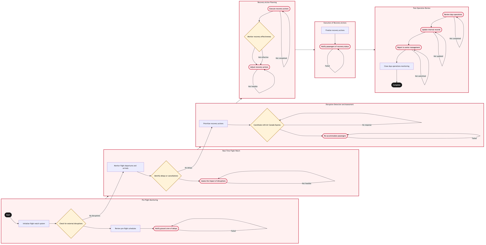

Updated 2026-08-21
Flight Watch and Day of Operation Monitoring
Process flow
Click to zoom

Process steps
▼
Phase 1 — Pre-Flight Monitoring
4 steps
| Step | Activity | Role | System | Input | Output | KPI | Dec | Exc | Pain point |
|---|---|---|---|---|---|---|---|---|---|
| 1.1 | Initialize flight watch system | YYZ Operations Control Duty Manager | NetLine/OpsB | Scheduled start of the day and pre-flight data | Flight watch system activated | System uptime > 99% | N | N | System downtime can cause initial monitoring delays. |
| 1.2 | Check for external disruptions | YYZ Operations Control Duty Manager | NAV CANADAB | Flight data and NOTAMs | Disruption list generated | External disruption detection rate > 95% | Y | N | Delays in receiving external NOTAMs can lead to missed disruptions. |
| 1.3 | Review pre-flight schedules | YYZ Operations Control Duty Manager | NetLine/OpsB | Flight schedules and operational plans | Pre-flight schedule review completed | Schedule adherence rate > 90% | N | N | Manual review can be error-prone and time-consuming. |
| 1.4 | Notify ground crew of delays | Ground Operations Coordinator | ACARS DatalinkC | Flight status updates | Notifications sent to ground crew | Notification response time < 5 minutes | N | Y | Communication issues can delay notifications. |
▼
Phase 2 — Real-Time Flight Watch
3 steps
| Step | Activity | Role | System | Input | Output | KPI | Dec | Exc | Pain point |
|---|---|---|---|---|---|---|---|---|---|
| 2.1 | Monitor flight departures and arrivals | Flight Operations Analyst | NetLine/OpsB | Live flight data | Real-time flight status updates | Flight status update frequency > every 5 minutes | N | N | High volume of flights can overwhelm monitoring systems. |
| 2.2 | Identify delays or cancellations | Flight Operations Analyst | NetLine/OpsB | Real-time flight data and thresholds | List of delayed or cancelled flights | Delay detection accuracy > 90% | Y | N | False positives can lead to unnecessary alerts. |
| 2.3 | Assess the impact of disruptions | Operations Control Duty Manager | Jeppesen OCCB | Disruption list and impact analysis tools | Impact assessment report | Impact assessment time < 10 minutes | N | Y | Complex disruptions may require extensive manual analysis. |
▼
Phase 3 — Disruption Detection and Assessment
3 steps
| Step | Activity | Role | System | Input | Output | KPI | Dec | Exc | Pain point |
|---|---|---|---|---|---|---|---|---|---|
| 3.1 | Prioritize recovery actions | Operations Control Duty Manager | Jeppesen OCCB | Impact assessment report and available resources | Recovery action plan | Action plan development time < 15 minutes | N | N | Resource constraints can limit recovery options. |
| 3.2 | Coordinate with Air Canada Express | Operations Control Duty Manager | Manual communicationU | Recovery plan and disruption data | Coordination notes | Cross-boundary coordination time < 30 minutes | Y | N | Inconsistent data sharing can lead to miscommunication. |
| 3.3 | Re-accommodate passengers | APPR Adjudicator | Amadeus Passenger RecoveryA | Passenger list and recovery plan | Re-accommodation status updates | Passenger re-accommodation rate > 85% | N | Y | System failures can prevent automated re-accommodations. |
▼
Phase 4 — Recovery Action Planning
3 steps
| Step | Activity | Role | System | Input | Output | KPI | Dec | Exc | Pain point |
|---|---|---|---|---|---|---|---|---|---|
| 4.1 | Execute recovery actions | Flight Operations Analyst | NetLine/OpsB | Recovery action plan and flight data | Action execution status updates | Action completion rate > 95% | N | Y | System errors can delay action execution. |
| 4.2 | Monitor recovery effectiveness | Flight Operations Analyst | NetLine/OpsB | Live flight data and thresholds | Recovery effectiveness report | Recovery success rate > 80% | Y | N | Continuous monitoring is resource-intensive. |
| 4.3 | Adjust recovery actions | Operations Control Duty Manager | Jeppesen OCCB | Recovery effectiveness report and impact analysis tools | Adjusted recovery action plan | Action adjustment time < 10 minutes | N | Y | Manual adjustments can introduce errors. |
▼
Phase 5 — Execution of Recovery Actions
2 steps
| Step | Activity | Role | System | Input | Output | KPI | Dec | Exc | Pain point |
|---|---|---|---|---|---|---|---|---|---|
| 5.1 | Finalize recovery actions | Operations Control Duty Manager | NetLine/OpsB | Adjusted recovery action plan and execution status | Final recovery report | Finalization time < 5 minutes | N | N | Rushing finalizations can lead to oversight. |
| 5.2 | Notify passengers of recovery status | Aeroplan Member Services Agent | ACARS DatalinkC | Final recovery report and passenger list | Passenger notifications sent | Notification response time < 10 minutes | N | Y | Communication failures can result in missed notifications. |
▼
Phase 6 — Post-Operation Review
4 steps
| Step | Activity | Role | System | Input | Output | KPI | Dec | Exc | Pain point |
|---|---|---|---|---|---|---|---|---|---|
| 6.1 | Review day's operations | Operations Control Duty Manager | NetLine/OpsB | Day's flight data and recovery logs | Operational review report | Review completion time < 30 minutes | N | Y | Complex operations can make reviews lengthy. |
| 6.2 | Update internal records | Operations Control Duty Manager | NetLine/OpsB | Operational review report and system records | Updated system records | Record update time < 10 minutes | N | Y | System errors can delay record updates. |
| 6.3 | Report to senior management | Operations Control Duty Manager | Manual communicationU | Operational review report and senior management requirements | Senior management update sent | Report submission time < 1 hour | N | Y | Complex reporting can lead to delays. |
| 6.4 | Close day's operations monitoring | YYZ Operations Control Duty Manager | NetLine/OpsB | Operational review report and system logs | Monitoring system deactivated | Deactivation time < 5 minutes | N | N | Forgetting to deactivate can lead to unnecessary resource consumption. |
Swim lanes
YYZ Operations Control Duty Manager1.1 1.2 1.3 6.4
Ground Operations Coordinator1.4
Flight Operations Analyst2.1 2.2 4.1 4.2
Operations Control Duty Manager2.3 3.1 3.2 4.3 5.1 6.1 6.2 6.3
APPR Adjudicator3.3
Aeroplan Member Services Agent5.2
Systems touched
NetLine/OpsBNAV CANADABACARS DatalinkCJeppesen OCCBManual communicationUAmadeus Passenger RecoveryA
Key performance indicators
- System uptime > 99%
- External disruption detection rate > 95%
- Delay detection accuracy > 90%
- Action completion rate > 95%
- Recovery success rate > 80%
Risks and control points
- Communicator system outage affecting flight watch
- Manual data sharing errors with Air Canada Express
- System failures during automated re-accommodations
- Resource constraints limiting recovery options
- Complex operations delaying real-time monitoring
Air Canada Process Wiki — process and systems reference compiled from public sources
for IT Application Management and User Support pre-sales discovery.
Built 2026-08-21. Every system carries an evidence tier: tier C is an industry pattern and tier U is an open
question, and neither should be asserted as fact about Air Canada without confirmation in discovery.
Not affiliated with or endorsed by Air Canada. Air Canada, Aeroplan and Altitude are trademarks of Air Canada.